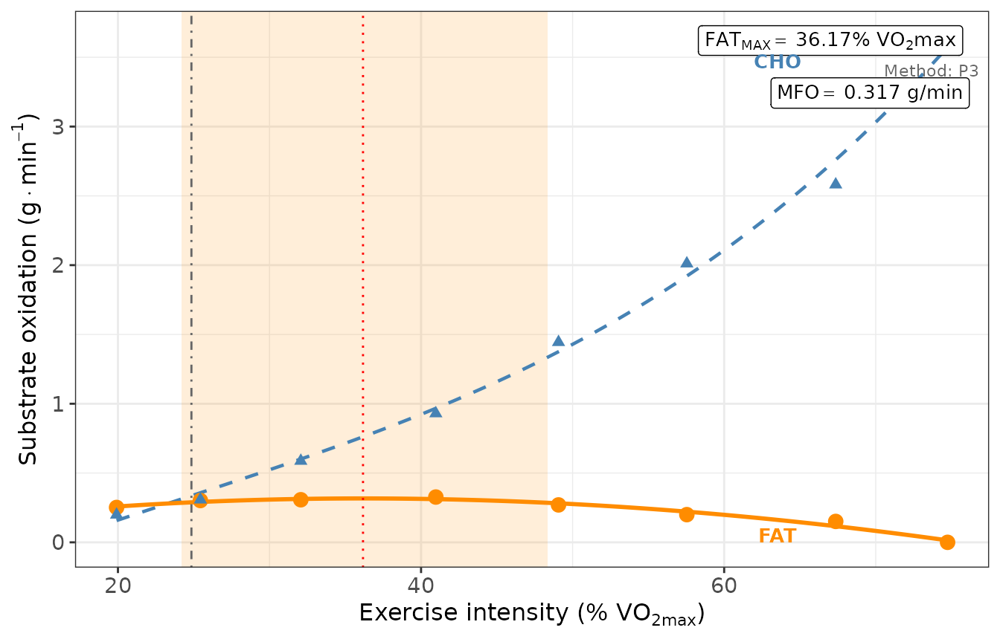
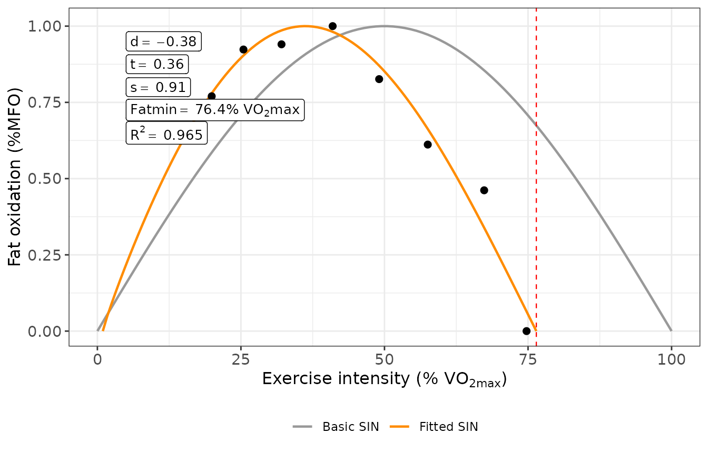

This vignette follows one participant of the example data from the
raw gas exchange to the numbers you would report in a paper. Every
intermediate object is computed in plain R, so you can see each formula
at work, and it is checked against what MFO() returns.
Every number in the text is computed when the vignette is built.
1. What the test measures
Fat oxidation is not measured directly; it is inferred from oxygen uptake (VO2) and carbon dioxide output (VCO2). Oxidising 1 g of glucose consumes 0.746 L of O2 and produces 0.746 L of CO2, a respiratory exchange ratio (RER) of 1.00; oxidising 1 g of fat consumes 2.03 L of O2 and produces 1.43 L of CO2, an RER of about 0.70 (Frayn 1983, Table 1). Solving these two balances for the two unknowns gives the stoichiometric equations that turn VO2 and VCO2 into grams of carbohydrate (CHO) and fat (FAT) oxidised per minute (Frayn 1983). The package uses them with urinary nitrogen set to zero, i.e. it ignores protein oxidation. The inference fails at high intensity, when CO2 released from the bicarbonate pool to buffer lactate adds to the CO2 produced by oxidation (Jeukendrup and Wallis 2005).
In a graded test the participant exercises in steps of increasing intensity, classically 3 min with 35 W increments (Achten et al. 2002); Chenevière et al. (2009) used 3 min with 20 W. Plotted against intensity, fat oxidation rises, reaches a peak, the maximal fat oxidation rate (MFO, g/min), and falls towards zero. The intensity at the peak is Fatmax, expressed as %VO2max. In the sample of Achten et al. (2002) Fatmax was 64 %VO2max (74 %HRmax), and Fatmax usually lies between 45 and 65 %VO2max (Achten et al. 2002; Maunder et al. 2018). The intensity at which fat oxidation becomes negligible is Fatmin: 89 ± 3 %VO2max in Achten et al. (2002) and 90.1 ± 14.1 %VO2max in Chenevière et al. (2009), who defined it as the second zero of their SIN model.
Achten et al. (2002) also defined the Fatmax zone, the range of intensities at which fat oxidation is within 10 % of the peak rate (mean zone 55–72 %VO2max in their sample). The package therefore needs three recordings per participant: a resting measurement (the basal state), the graded MFO test, and a maximal test (or a known VO2max) to express every step as %VO2max.
2. Input data
The three tables shipped with the package are anonymised recordings
of one participant, averaged every 20 s
(step_time = 20).
head(basal_df) # resting measurement, 45 records = 15 min
#> Time HR VO2 VCO2 RER BF VE PETCO2
#> 1 1899-12-31 00:00:20 75.0 292 256 0.88 13 8 35.4
#> 2 1899-12-31 00:00:40 71.0 261 223 0.86 14 7 35.9
#> 3 1899-12-31 00:01:00 73.4 276 247 0.90 15 8 35.3
#> 4 1899-12-31 00:01:20 75.0 280 242 0.86 13 8 35.0
#> 5 1899-12-31 00:01:40 69.6 277 244 0.88 14 7 36.4
#> 6 1899-12-31 00:02:00 66.2 258 221 0.86 14 7 35.3
head(MFO_df) # graded MFO test, 72 records = 8 steps of 3 min
#> Time HR VO2 VCO2 RER BF VE PETCO2
#> 1 1899-12-31 00:00:20 90.2 635 487 0.77 17 18 35.8
#> 2 1899-12-31 00:00:40 94.9 627 479 0.76 16 19 35.6
#> 3 1899-12-31 00:01:00 93.3 634 468 0.74 14 17 36.1
#> 4 1899-12-31 00:01:20 95.6 646 486 0.75 16 18 35.3
#> 5 1899-12-31 00:01:40 93.5 630 483 0.77 17 18 36.6
#> 6 1899-12-31 00:02:00 99.4 679 517 0.76 16 17 35.7
head(VO2max_df) # maximal graded test
#> Time HR Load VO2 VCO2 RER BF VE PETCO2
#> 1 1899-12-31 00:00:20 110.7 75 894 706 0.79 20 26 35.8
#> 2 1899-12-31 00:00:40 109.4 75 938 732 0.78 18 24 35.7
#> 3 1899-12-31 00:01:00 110.1 75 930 727 0.78 17 27 35.4
#> 4 1899-12-31 00:01:20 120.9 100 1191 994 0.83 19 31 37.4
#> 5 1899-12-31 00:01:40 117.4 100 1270 1061 0.84 20 29 36.9
#> 6 1899-12-31 00:02:00 119.0 100 1207 1030 0.85 20 29 36.6Each table must have, at regular intervals of step_time
seconds, the columns
| Column | Unit | Used for |
|---|---|---|
VO2 |
mL/min | substrate oxidation, %VO2max |
VCO2 |
mL/min | substrate oxidation |
RER |
— (VCO2/VO2) | basal window, RER_cutoff
|
HR |
beats/min | heart rate at Fatmax (optional) |
Other columns (Time, BF, VE,
PETCO2, Load) are ignored. Columns with other
names are mapped with the col_name_* arguments of
MFOs(). Heart rate never decides which rows or steps are
dropped: without HR, MFO() warns and returns
NA for the heart-rate outputs, and MFO and Fatmax do not
change.
3. Step by step
MFO() runs the whole pipeline in one call. Here each
step is rebuilt by hand, with the same defaults: Frayn equations, 3-min
steps, the last 60 s of each step, P3 fit.
3.1 VO2max
VO2max is the highest rolling mean of VO2 in the maximal test over
vo2max_window seconds (default 30). With 20-s records a
30-s window is rounded up to 2 records (40 s). This averaging is a rule
of the package.
3.2 Basal window
The first 5 min of the resting recording are discarded. In the rest,
the package takes the 5-min window with the lowest coefficient of
variation (CV = SD / mean) of cv_var, here RER. Both
durations are rules of the package.
window <- 300 / step_time # 15 records = 5 min
rest <- basal_df[-seq_len(window), ] # drop the first 5 min
cv <- sapply(seq_len(nrow(rest) - window + 1), function(i) {
x <- rest$RER[i:(i + window - 1)]
sd(x) / mean(x)
})
best <- which.min(cv)
basal_window <- rest[best:(best + window - 1), c("VO2", "VCO2", "RER", "HR")]
basal <- colMeans(basal_window)
round(basal, 3)
#> VO2 VCO2 RER HR
#> 244.933 201.467 0.823 64.3133.3 Step averaging
Each 3-min step has 9 records; only the last
steady_state_duration seconds (60 s = 3 records) are
averaged, as Chenevière et al. (2009) did with the last minute of
each step.
records_per_step <- 180 / step_time # 9
records_steady <- 60 / step_time # 3
mfo <- data.frame(MFO_df)
mfo$step <- rep(seq_len(nrow(mfo) %/% records_per_step), each = records_per_step)
position <- ave(mfo$step, mfo$step, FUN = seq_along)
steady <- mfo[position > records_per_step - records_steady, ]
steps <- aggregate(cbind(VO2, VCO2, RER, HR) ~ step, data = steady, FUN = mean)
steps$porc_VO2 <- steps$VO2 / VO2max * 100
round(steps, 2)
#> step VO2 VCO2 RER HR porc_VO2
#> 1 1 660.00 509.33 0.77 95.13 19.91
#> 2 2 843.33 662.67 0.78 110.30 25.44
#> 3 3 1063.00 879.00 0.83 120.43 32.07
#> 4 4 1358.33 1162.67 0.85 137.60 40.98
#> 5 5 1626.67 1465.00 0.90 145.57 49.07
#> 6 6 1907.33 1787.67 0.94 154.87 57.54
#> 7 7 2233.00 2142.67 0.96 170.87 67.36
#> 8 8 2477.67 2550.67 1.03 178.30 74.74If the recording ends in the middle of a step, MFO()
warns with the length of that incomplete step and drops it, unless
use_incomplete_step = TRUE. Here 72 records are exactly 8
steps.
3.4 Stoichiometric equation
With VO2 and VCO2 in L/min, the equations of Frayn (1983) (the
default, author = "Frayn") are
author = "Peronnet" uses the coefficients derived from
Table 1 of Péronnet and Massicotte (1991) (4.58519 / 3.22597 and 1.69469
/ 1.70130), because the article prints no equation.
author = "Jeukendrup" uses the exercise equations printed
by Jeukendrup and Wallis (2005) (Table 5), one CHO equation
for 40–50 % and one for 50–75 %VO2max; it needs VO2max and warns for
steps outside 40–75 %VO2max. The same equation is applied to the basal
window.
frayn <- function(VO2, VCO2) {
data.frame(CHO = 4.55 * VCO2 / 1000 - 3.21 * VO2 / 1000,
FAT = 1.67 * VO2 / 1000 - 1.67 * VCO2 / 1000)
}
steps <- cbind(steps, frayn(steps$VO2, steps$VCO2))
basal_ox <- frayn(basal[["VO2"]], basal[["VCO2"]])
round(steps[, c("step", "porc_VO2", "RER", "CHO", "FAT")], 3)
#> step porc_VO2 RER CHO FAT
#> 1 1 19.910 0.773 0.199 0.252
#> 2 2 25.440 0.783 0.308 0.302
#> 3 3 32.066 0.827 0.587 0.307
#> 4 4 40.975 0.853 0.930 0.327
#> 5 5 49.070 0.903 1.444 0.270
#> 6 6 57.536 0.940 2.011 0.200
#> 7 7 67.360 0.960 2.581 0.151
#> 8 8 74.741 1.030 3.652 -0.122
round(basal_ox, 3)
#> CHO FAT
#> 1 0.13 0.073Energy expenditure (Kcal in the output) uses 4 kcal/g
CHO and 9 kcal/g fat with energy_equivalents = "classic",
the default in 0.2.x. With "source" it uses the values of
the equation’s source: 3.8683 / 9.7460 kcal/g (Péronnet and Massicotte 1991), also
for Frayn, who gives none, or 3.95 (40–50 %VO2max) / 4.07 (50–75
%VO2max) and 9.75 kcal/g (Jeukendrup and Wallis 2005, Table
5). MFO and Fatmax do not depend on this choice.
3.5 RER cutoff and negative fat oxidation
With Frayn’s coefficients FAT = 1.67 VO2 (1 − RER), so any step with
RER > 1 gives a negative fat oxidation, which is an artefact. Two
arguments handle it. RER_cutoff removes the steps above a
threshold before anything else (section 6). negative_FAT
decides what happens to the remaining negative values:
"truncate" (default) sets them to 0, "exclude"
drops the step and "keep" leaves them.
steps[steps$FAT < 0, c("step", "RER", "FAT")]
#> step RER FAT
#> 8 8 1.03 -0.12191
steps$FAT[steps$FAT < 0] <- 0 # negative_FAT = "truncate"By default the basal point is not part of the fit
(include_basal = FALSE, section 6).
3.6 Curve fit
The default method, P3, fits a third-degree polynomial of FAT on %VO2max. Fatmax is the root of its derivative that gives the highest FAT within the measured range, and MFO is the fitted FAT at that root.
p3 <- lm(FAT ~ porc_VO2 + I(porc_VO2^2) + I(porc_VO2^3), data = steps)
b <- coef(p3)
roots <- Re(polyroot(c(b[2], 2 * b[3], 3 * b[4]))) # FAT'(x) = 0
roots <- roots[roots >= min(steps$porc_VO2) & roots <= max(steps$porc_VO2)]
fat_at <- function(x) predict(p3, newdata = data.frame(porc_VO2 = x))
Fatmax <- roots[which.max(fat_at(roots))]
MFO_hand <- unname(fat_at(Fatmax))
c(MFO = MFO_hand, Fatmax = Fatmax, R2 = summary(p3)$r.squared)
#> MFO Fatmax R2
#> 0.3167120 36.1703807 0.97115753.7 Outputs
The Fatmax zone is the range of fitted intensities with FAT ≥ 90 % of MFO (Achten et al. 2002), searched on a grid of 1000 points. The crossover point is the intensity at which CHO overtakes FAT, interpolated linearly between the two steps where FAT − CHO changes sign, following the crossover concept of Brooks and Mercier (1994). Heart rate at Fatmax is interpolated linearly from the step values.
grid <- seq(min(steps$porc_VO2), max(steps$porc_VO2), length.out = 1000)
zone <- range(grid[fat_at(grid) >= 0.9 * MFO_hand])
diff_ox <- steps$FAT - steps$CHO
i <- which(diff(sign(diff_ox)) != 0)[1]
crossover <- approx(diff_ox[i:(i + 1)], steps$porc_VO2[i:(i + 1)], xout = 0)$y
HR_Fatmax <- approx(steps$porc_VO2, steps$HR, xout = Fatmax)$y
round(c(zone_lower = zone[1], zone_upper = zone[2],
crossover = crossover, HR_Fatmax = HR_Fatmax), 2)
#> zone_lower zone_upper crossover HR_Fatmax
#> 24.19 48.34 24.85 128.34The same analysis in one call:
res <- MFO(step_time = 20, db_MFO = MFO_df, db_basal = basal_df,
db_graded = VO2max_df, cv_var = "RER", author = "Frayn",
energy_equivalents = "classic")
#> VO2max: a 30-s window is not a multiple of step_time (20 s); using 2 record(s) = 40 s.
#> Warning in MFO(step_time = 20, db_MFO = MFO_df, db_basal = basal_df, db_graded
#> = VO2max_df, : 1 step(s) with negative fat oxidation detected (RER > 1.0
#> artifact).
hand <- c(VO2max, MFO_hand, Fatmax, zone, crossover, HR_Fatmax,
basal_ox$CHO, basal_ox$FAT)
package <- c(res$VO2max, res$MFO, res$FAT_MAX, res$FatMax_zone_lower,
res$FatMax_zone_upper, res$crossover_point, res$FAT_MAX_HR,
res$x_CHO, res$x_FAT)
all.equal(unname(hand), unname(package))
#> [1] TRUEThe warning reports the step with RER > 1 that was truncated
(3.5); the message reports the effective VO2max window (3.1).
res$MFO_db is the step table that entered the fit. Its
Load column is a step index, not the measured load.
res$MFO_db
#> Load VO2 VCO2 HR RER CHO FAT Kcal
#> 2 15 660.0000 509.3333 95.13333 0.7733333 0.1988667 0.2516133 3.059987
#> 3 30 843.3333 662.6667 110.30000 0.7833333 0.3080333 0.3017133 3.947553
#> 4 45 1063.0000 879.0000 120.43333 0.8266667 0.5872200 0.3072800 5.114400
#> 5 60 1358.3333 1162.6667 137.60000 0.8533333 0.9298833 0.3267633 6.660403
#> 6 75 1626.6667 1465.0000 145.56667 0.9033333 1.4441500 0.2699833 8.206450
#> 7 90 1907.3333 1787.6667 154.86667 0.9400000 2.0113433 0.1998433 9.843963
#> 8 105 2233.0000 2142.6667 170.86667 0.9600000 2.5812033 0.1508567 11.682523
#> 9 120 2477.6667 2550.6667 178.30000 1.0300000 3.6522233 0.0000000 13.511703
#> porc_VO2
#> 2 19.90950
#> 3 25.43992
#> 4 32.06637
#> 5 40.97536
#> 6 49.06988
#> 7 57.53645
#> 8 67.36048
#> 9 74.74108
res$MFO_plot
4. Choosing a method
method chooses how the peak is located:
- P3 (default): third-degree polynomial; it can fit an asymmetric curve.
- P2: second-degree polynomial; its vertex forces a symmetric curve.
- MV (measured values): the step with the highest observed FAT, no fit; its resolution is one step, and the Fatmax zone is interpolated linearly between steps.
-
MRER: following Pérez-Martín et al. (2001), as described by Chenevière et al. (2009), (1 − RER) and VO2 are
fitted as straight lines of intensity and Fatmax is the vertex of FAT =
1.7 (1 − RER) VO2, whatever
authorsays. It falls back to MV with a warning if the vertex is not a maximum inside the measured range. Until v0.2.0 the method called"MRER"was in fact MV.
To compare them, a small helper runs MFO() with the
example data and keeps the warnings as text:
run_MFO <- function(...) {
warnings <- character(0)
out <- withCallingHandlers(
suppressMessages(MFO(step_time = 20, db_MFO = MFO_df, db_basal = basal_df,
db_graded = VO2max_df, cv_var = "RER", author = "Frayn",
energy_equivalents = "classic", ...)),
warning = function(w) {
warnings <<- c(warnings, conditionMessage(w))
invokeRestart("muffleWarning")
})
out$warnings <- warnings
out
}
methods <- c("P3", "P2", "MV", "MRER")
by_method <- lapply(methods, function(m) run_MFO(method = m))
knitr::kable(data.frame(
method = methods,
MFO = sapply(by_method, `[[`, "MFO"),
Fatmax = sapply(by_method, `[[`, "FAT_MAX"),
zone_lower = sapply(by_method, `[[`, "FatMax_zone_lower"),
zone_upper = sapply(by_method, `[[`, "FatMax_zone_upper"),
zone_method = sapply(by_method, `[[`, "FatMax_zone_method"),
R2 = sapply(by_method, `[[`, "R_squared"),
RMSE = sapply(by_method, `[[`, "RMSE")
), digits = 3, caption = "MFO (g/min) and Fatmax and zone (%VO2max) by method.")| method | MFO | Fatmax | zone_lower | zone_upper | zone_method | R2 | RMSE |
|---|---|---|---|---|---|---|---|
| P3 | 0.317 | 36.170 | 24.191 | 48.341 | fitted curve | 0.971 | 0.017 |
| P2 | 0.315 | 36.336 | 23.971 | 48.725 | fitted curve | 0.971 | 0.017 |
| MV | 0.327 | 40.975 | 24.630 | 45.596 | linear interpolation | NA | NA |
| MRER | 0.327 | 35.787 | 24.520 | 47.078 | fitted curve | 0.927 | 0.038 |
In the comparison by Chenevière et al. (2009), MRER was less accurate than SIN and P3. Whatever method you choose, look at the observed steps next to the fitted value: the difference shows how much the fit adds.
5. Fat oxidation kinetics with the SIN model
Chenevière et al. (2009) describe the whole curve, normalised to %MFO, with a sine function of three parameters (their eq. [14]):
With d = 0, s = 1 and t = 0 it is a half sine wave with its peak at
50 %VO2max and zeros at 0 and 100 %VO2max. d
(dilatation) widens (d > 0) or narrows (d < 0) the curve;
s (symmetry) skews it: s > 1 is a rightward
asymmetry and 0 < s < 1 a leftward one (Chenevière et al. 2009);
t (translation) shifts the whole curve left (t > 0)
or right (t < 0). MFO_kinetics() fits the model by
nonlinear least squares directly to the observed steps, normalised to
the highest observed step, without smoothing, as Chenevière et al. (2009) did. Fatmax_SIN and Fatmin
come from closed forms of eq. [14]; Fatmin is the second zero of the
curve (set fatmin_threshold to use a proportion of MFO
instead).
kin <- MFO_kinetics(res$MFO_db)
knitr::kable(data.frame(
parameter = c("d", "s", "t"),
estimate = c(kin$d, kin$s, kin$t),
std_error = c(kin$d_se, kin$s_se, kin$t_se)
), digits = 3)| parameter | estimate | std_error |
|---|---|---|
| d | -0.385 | 0.194 |
| s | 0.910 | 0.307 |
| t | 0.355 | 0.228 |
round(c(FatMax_SIN = kin$FatMax_SIN, Fatmin = kin$Fatmin, R2 = kin$R_squared), 2)
#> FatMax_SIN Fatmin R2
#> 36.18 76.44 0.97
kin$MFO_kinetics_plot
MFO_kinetics() fits every row it receives, so the SIN
inherits the choices made in MFO(). In this example the
last step has RER > 1: truncated to zero it is a point of the curve,
excluded it is not. RER_cutoff = 1 gives the selection of
Chenevière et al. (2009), who averaged only the steps
with RER ≤ 1.0.
sin_row <- function(label, fit) {
k <- suppressWarnings(MFO_kinetics(fit$MFO_db))
data.frame(setting = label, steps = nrow(fit$MFO_db), d = k$d, s = k$s,
t = k$t, FatMax_SIN = k$FatMax_SIN, Fatmin = k$Fatmin)
}
knitr::kable(rbind(
sin_row("negative_FAT = \"truncate\"", res),
sin_row("negative_FAT = \"exclude\"", run_MFO(negative_FAT = "exclude")),
sin_row("RER_cutoff = 1", run_MFO(RER_cutoff = 1))
), digits = 3, caption = "SIN parameters; Fatmax_SIN and Fatmin in %VO2max.")| setting | steps | d | s | t | FatMax_SIN | Fatmin |
|---|---|---|---|---|---|---|
| negative_FAT = “truncate” | 8 | -0.385 | 0.910 | 0.355 | 36.182 | 76.443 |
| negative_FAT = “exclude” | 7 | -0.440 | 0.539 | 0.023 | 33.157 | 85.252 |
| RER_cutoff = 1 | 7 | -0.440 | 0.539 | 0.023 | 33.157 | 85.252 |
A single step moves Fatmin by several points here, which is why the
setting must be reported. With fewer than 4 steps the SIN is not fitted
(convergence = FALSE); with 4–5 steps it is fitted with a
warning, and 6 or more steps are recommended.
6. Sensitivity to protocol decisions
RER cutoff
RER_cutoff accepts a number or a name.
"classic" is 1.00; "safe" is 0.95, the
threshold Amaro-Gahete et
al. (2019) recommend to
end the test safely; "sedentary" (0.93) and
"trained" (0.90) are the mean RER at MFO they found in
sedentary and trained people. Lower cutoffs leave fewer steps:
cutoffs <- list(none = NULL, classic = "classic", safe = "safe",
sedentary = "sedentary", trained = "trained")
by_cutoff <- lapply(cutoffs, function(cut) run_MFO(RER_cutoff = cut))
knitr::kable(data.frame(
RER_cutoff = names(cutoffs),
steps = sapply(by_cutoff, function(r) nrow(r$MFO_db)),
MFO = sapply(by_cutoff, `[[`, "MFO"),
Fatmax = sapply(by_cutoff, `[[`, "FAT_MAX"),
R2 = sapply(by_cutoff, `[[`, "R_squared"),
warnings = sapply(by_cutoff, function(r) length(r$warnings)),
row.names = NULL
), digits = 3)| RER_cutoff | steps | MFO | Fatmax | R2 | warnings |
|---|---|---|---|---|---|
| none | 8 | 0.317 | 36.170 | 0.971 | 1 |
| classic | 7 | 0.325 | 33.882 | 0.973 | 0 |
| safe | 6 | 0.323 | 35.744 | 0.965 | 0 |
| sedentary | 5 | 0.326 | 36.887 | 0.914 | 1 |
| trained | 4 | 0.309 | 29.449 | 1.000 | 1 |
by_cutoff$trained$warnings
#> [1] "The curve is fitted with 4 exercise step(s); at least 6 are recommended (min_steps). A low RER_cutoff or negative_FAT = \"exclude\" removes steps."With "trained" only 4 steps remain and
MFO() warns that at least min_steps (default
6) are recommended. Its R² of 1 is not a good fit: four points and four
coefficients make the polynomial pass through every point. A low cutoff
only works if the protocol provides enough steps below it.
Basal point as step 0
include_basal = TRUE adds the resting point as step 0 of
the fit, and of the SIN model, which departs from Chenevière et al. (2009). The default
FALSE reproduces the results of MFO 0.1.0 and 0.2.0.
by_basal <- list(`FALSE` = res, `TRUE` = run_MFO(include_basal = TRUE))
knitr::kable(data.frame(
include_basal = names(by_basal),
rows = sapply(by_basal, function(r) nrow(r$MFO_db)),
MFO = sapply(by_basal, `[[`, "MFO"),
Fatmax = sapply(by_basal, `[[`, "FAT_MAX"),
R2 = sapply(by_basal, `[[`, "R_squared"),
FatMax_SIN = sapply(by_basal, function(r)
suppressWarnings(MFO_kinetics(r$MFO_db))$FatMax_SIN),
row.names = NULL
), digits = 3)| include_basal | rows | MFO | Fatmax | R2 | FatMax_SIN |
|---|---|---|---|---|---|
| FALSE | 8 | 0.317 | 36.170 | 0.971 | 36.182 |
| TRUE | 9 | 0.322 | 36.112 | 0.975 | 35.851 |
7. Reporting
The paragraph below is generated from the results of this example; replace the protocol details (in brackets) with your own. HRmax is taken here as the highest 20-s heart rate of the maximal test.
HRmax <- max(VO2max_df$HR)
final <- run_MFO(HRmax = HRmax)
n_steps <- sum(final$MFO_db$Load != "basal")Substrate oxidation was computed from the mean VO2 and VCO2 of the last 60 s of each 3-min step with the equations of Frayn (1983), with urinary nitrogen set to zero. VO2max (3315 mL/min) was the highest 40-s rolling mean of VO2 in the maximal test. The resting value was the mean of the 5-min window with the lowest coefficient of variation of RER after discarding the first 5 min. Negative fat oxidation rates (RER > 1) were set to zero and the resting point was not included in the fit. MFO and Fatmax were determined with a third-degree polynomial of fat oxidation on %VO2max fitted to 8 steps (R² = 0.97). The Fatmax zone was defined as the intensities eliciting at least 90% of MFO (Achten et al., 2002). Fat oxidation kinetics were described with the SIN model (Chenevière et al., 2009). MFO was 0.32 g/min at 36.2% VO2max (128 bpm, 68.7% HRmax; Fatmax zone 24.2–48.3% VO2max); the SIN parameters were d = -0.38, s = 0.91 and t = 0.36, with Fatmin at 76.4% VO2max. Analyses were run with the R package MFO, version 0.2.0.9000, [protocol: ergometer, initial load and increment, fasting and pre-test conditions].
Add MFO relative to body mass or fat-free mass when you have them
(body_mass, fat_free_mass). Also report the
day-to-day error of the measure when you interpret individual values: in
Chrzanowski-Smith et
al. (2020) (n = 99) the
coefficient of variation was 21 % for MFO and 26 % for Fatmax, and in
Croci et al. (2014) (n = 15) the CV of Fatmax was
16.4 % with SIN, 18.6 % with P3 and 20.8 % with MV.
8. Batch processing with MFOs()
MFOs() applies the same analysis to many participants
and returns one row per participant. With from = "folder"
each participant has a subfolder with three xlsx files; with
from = "files" each participant has one xlsx file with
three sheets. The example builds two participants in a temporary folder:
P01 is the example data and P02 the same data with VO2 and VCO2 scaled
by 1.1 (same RER), so that the two rows differ.
root <- file.path(tempdir(), "mfo-batch")
dir.create(root, showWarnings = FALSE)
scale_gas <- function(db, k) transform(db, VO2 = VO2 * k, VCO2 = VCO2 * k)
for (id in c("P01", "P02")) {
k <- if (id == "P01") 1 else 1.1
dir.create(file.path(root, id), showWarnings = FALSE)
openxlsx::write.xlsx(scale_gas(basal_df, k), file.path(root, id, "basal_df.xlsx"))
openxlsx::write.xlsx(scale_gas(MFO_df, k), file.path(root, id, "MFO_df.xlsx"))
openxlsx::write.xlsx(scale_gas(VO2max_df, k), file.path(root, id, "VO2max_df.xlsx"))
}
list.files(root, recursive = TRUE)
#> [1] "P01/basal_df.xlsx" "P01/MFO_df.xlsx" "P01/VO2max_df.xlsx"
#> [4] "P02/basal_df.xlsx" "P02/MFO_df.xlsx" "P02/VO2max_df.xlsx"save_plot and save_result write the plots
and the summary table to the working directory; they are switched off
here. Every warning is repeated with the participant ID in front.
batch <- MFOs(from = "folder", path = root,
db_basal_name = "basal_df", db_MFO_name = "MFO_df",
db_graded_name = "VO2max_df", step_time = 20, cv_var = "RER",
author = "Frayn", energy_equivalents = "classic",
save_plot = FALSE, save_result = FALSE)
#> Processing: P01
#> VO2max: a 30-s window is not a multiple of step_time (20 s); using 2 record(s) = 40 s.
#> Warning: P01: 1 step(s) with negative fat oxidation detected (RER > 1.0
#> artifact).
#> Processing: P02
#> VO2max: a 30-s window is not a multiple of step_time (20 s); using 2 record(s) = 40 s.
#> Warning: P02: 1 step(s) with negative fat oxidation detected (RER > 1.0
#> artifact).
knitr::kable(batch[, c("ID", "MFO_g_min", "FAT_MAX_perVO2max", "VO2max",
"FatMax_zone_lower", "FatMax_zone_upper", "d", "s", "t",
"Fatmin")], digits = 3)| ID | MFO_g_min | FAT_MAX_perVO2max | VO2max | FatMax_zone_lower | FatMax_zone_upper | d | s | t | Fatmin |
|---|---|---|---|---|---|---|---|---|---|
| P01 | 0.317 | 36.17 | 3315.0 | 24.19 | 48.34 | -0.385 | 0.91 | 0.355 | 76.44 |
| P02 | 0.348 | 36.17 | 3646.5 | 24.19 | 48.34 | -0.385 | 0.91 | 0.355 | 76.44 |